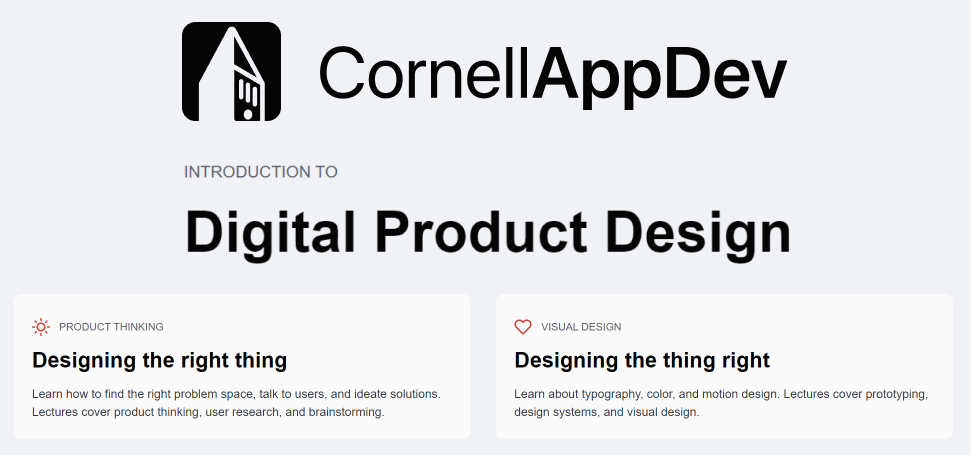

Transitioning From Food Science to UX
The perception of a food science career changes widely on who you ask. Some see it as “culinary magic” and making food taste great, while others see it as a form of technology that is ruining the traditional ways of eating.
However, not quite.
Yes, lab work is a significant part of food science, however, the steps to how we got to the lab work is far more important. At its core, food science is about people and understanding the lifestyle and ingredients that support the culture and foods that they eat.
I would like to guide you and draw parallels between food science and UX design through a food product development competition I participated in in 2021.
I will reference the five elements of the design process: empathize, define, ideate, prototype, and test. The theme of this competition was to create an innovative food.
We first analyzed the market trends and saw what is currently out there. We saw that during the Covid-19, consumers preferred convenience such as ready-to-eat snacks. They also became more conscious about the nutritional profile and stayed away from high fat, sodium, and preservatives and coloring.
We wanted it to be a niche product that caters to Gen Z and Millennials and focuses on healthy and sustainable factors.
After going through a lot of ideas such as a ready-to-eat poke bowl or pre-made sauce packets, we evaluated the pros and cons of each based on the nutrition and sustainability. We narrowed it down to a vegan charcuterie because of its niche product and it had the most flexibility in making it sustainable. We considered using fermented ingredients because of its ingredient novelty and nutritional benefits.
Our vegan “cheese” prototype consisted of using fermented tofu and gums. Our initial prototype quickly ran into problems and had an unpleasant gelatinous texture. We experimented by changing the proportions of flour content and gum ratio. Our team met weekend after weekend and went through over fifty iterations. Each time we adjusted and tasted over the course of four months, making significant improvements in the texture.
When making these prototypes, we had to constantly keep in mind the consumers who are tasting this and the experience we are delivering to them. We also had to consider how serving size and thickness of cheese and salami affected taste.
We conducted a sensory test similar to a usability testing for design in order to see what attributes that people liked. We collected data from over seventy consumers about the darkness of the salami and the lack of umami flavor. To respond, we tried out varying ratios of beet juice and vegetable broth to enhance the redness and flavor of the salami. Overall, we found a 61% increase of likability in both of our samples since we conducted the first sensory test.
My skills in problem-solving, testing, and improving prototypes that I have been honing through college years and during my internships are highly transferable to design. Food science embraces trial and error and the ability to explore multiple options and different combinations of ingredients. Creating explorations and determining the pros and cons of prototype iterations through user centered design is a central theme to UX design as well as food science.
Through a digital product design class at Cornell, I came to love design, a form of problem-solving. Whether we are ready or not, the world is constantly changing. It didn't seem long ago that computers were introduced to the world and now rapidly shifting to AR/VR experiences. Mobile and web usage are are an integral part of our daily lifestyle. I want to be a part of this change and making meaningful changes to society. I want to create interfaces that are not only aesthetically pleasing but are impactful and solve significant real world problems.
At its root, food science and UX focuses on the people.
It starts with understanding what users need and want, and then circles back to making sure that the new prototype satisfies these users. The experience, whether it is a dessert or an interface, drives customer satisfaction. I strongly believe that without putting people first, we are unable to create quality product that attracts new consumers or make people coming back for more. In order to create quality product, we must understand what consumers need so that we can cater to them and focus on what's most important in product development.
At first glance, food science and UX design seem worlds apart. One is within the agriculture community and the other focuses on the fast-paced world of tech. Both heavily emphasize the non-linear process of creating a new product, both from a people-driven standpoint as well as from a business side. Despite that, my abilities to identify the key problem, troubleshoot and not being afraid to explore many options can add value to my work as a UX designer. This journey hasn't been an easy choice, but I know that UX is the right path for me. I'm ready to bring my love for creating better experiences into the world of UX design.